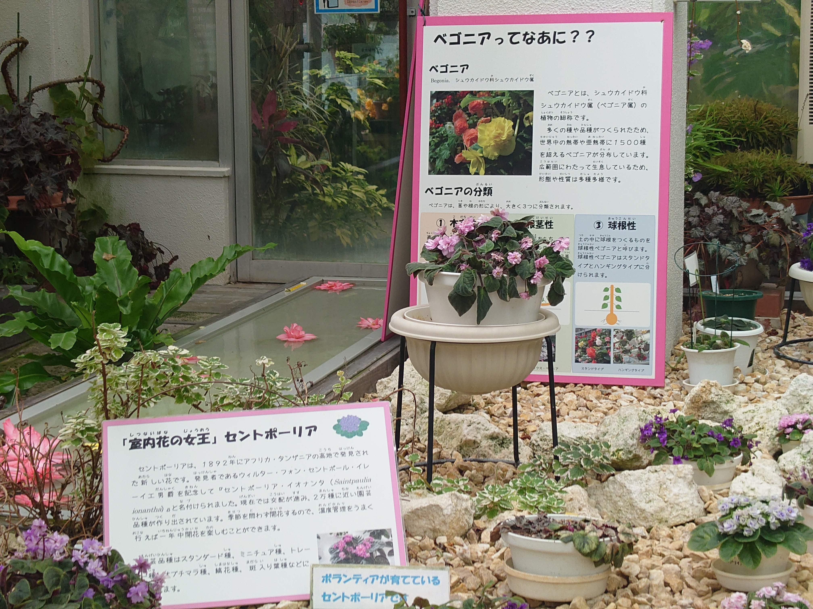
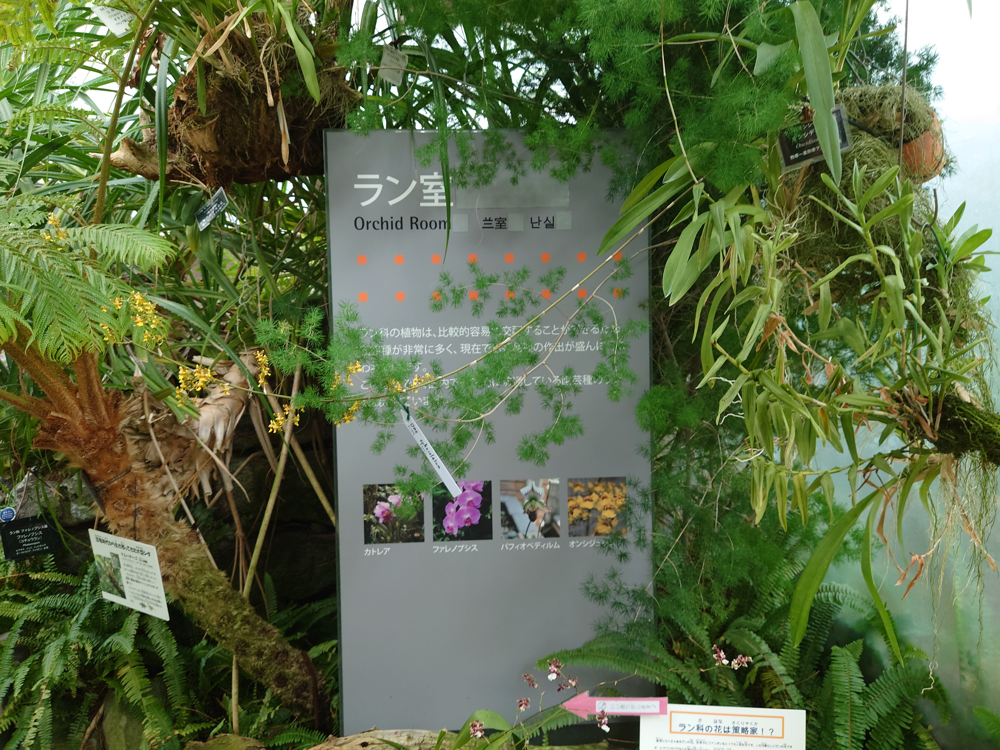
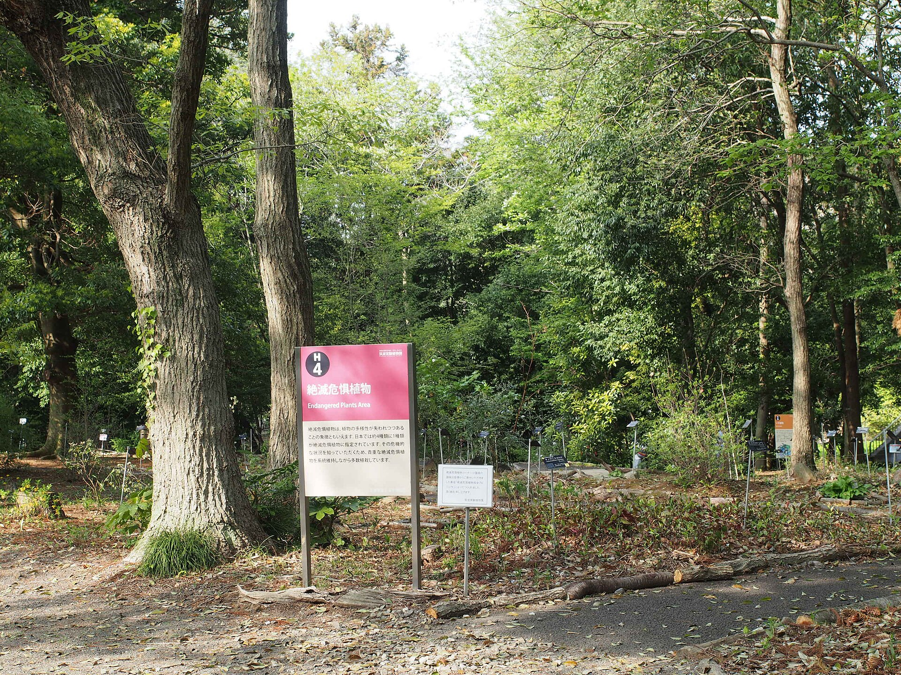
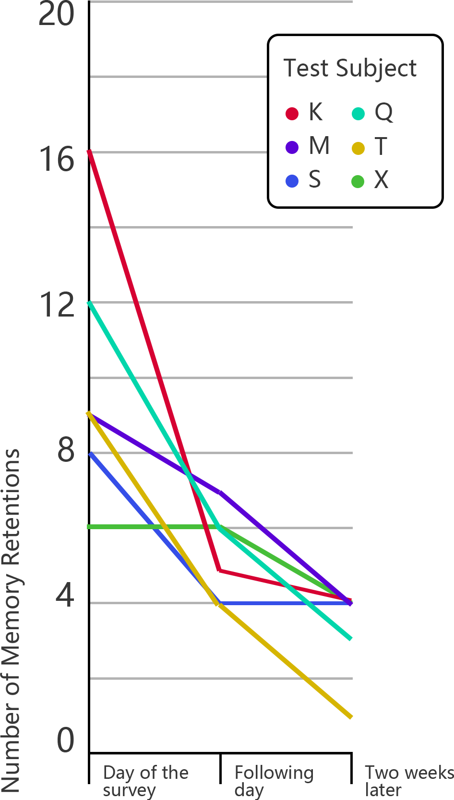
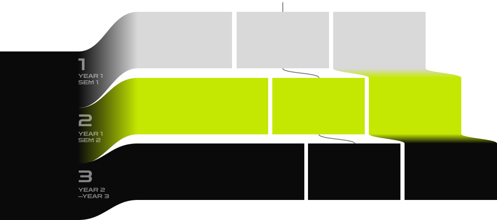
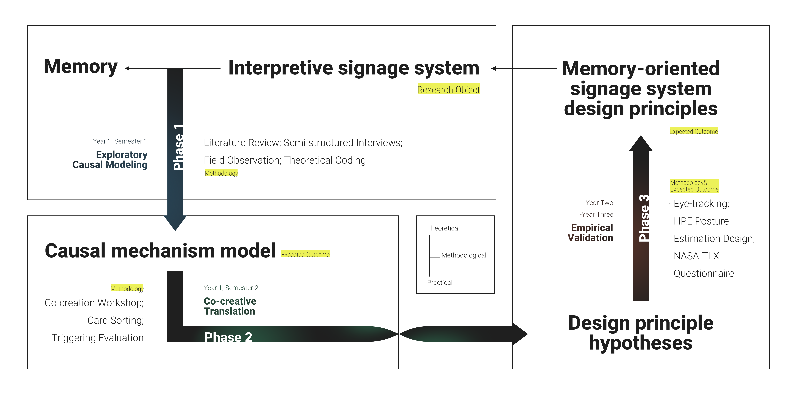

01
Contextual Learning Model 情境学習モデル
Falk & Dierking (1992). Learning is shaped by the physical, personal, and socio-cultural context around a sign. 学習は物理・個人・社会文化的文脈に規定される。
cite learning and exploring as a core motivation.60%以上が「学習・探索」を主要動機に挙げる。

Name and distinguish plants.植物を識別する。
Turn displays into knowledge.展示を知識へ変換する。
Link signs across a route.経路上でサインをつなぐ。



Falk & Dierking (1992). Learning is shaped by the physical, personal, and socio-cultural context around a sign. 学習は物理・個人・社会文化的文脈に規定される。
Ham (1992). A sign succeeds only when it first captures attention, then delivers meaningful value. 注意を引き、次に意味的価値を届けることで学習が成立する。
Mayer (2001). Text and image, when designed together, reduce cognitive load and deepen encoding. テキストと画像の統合設計が認知負荷を下げ記憶を深める。

Sign after sign.連続閲覧。
Resources decline.処理資源が低下。
Memory weakens.記憶保持が弱まる。

average second-day forgetting rate in master's research.修士研究で確認された平均翌日忘却率。

What variables matter?どの設計変数が認知負荷と情報保持に影響するのか。
design variables → cognitive load設計変数 → 認知負荷
route sequence → attention trace経路順序 → 注意の軌跡
media composition → memory retentionメディア構成 → 記憶保持
integrated explanatory model統合された説明モデル
Prior models of attention, load, and memory.注意、負荷、記憶に関する先行モデル。
Visitor needs and management constraints.来訪者ニーズと管理上の制約。
Trace signs on the real Fukuoka route.福岡市植物園温室の実経路でサインを確認する。
How does the model become usable?認知モデルを、使える設計原則へどう変換するのか。
design variables → cognitive load設計変数 → 認知負荷
route sequence → attention trace経路順序 → 注意の軌跡
media composition → memory retentionメディア構成 → 記憶保持
integrated explanatory model統合された説明モデル
Expert review, staff/design workshops, and prototypes translate the model into shared design language.専門家レビュー、現場・デザインのワークショップ、試作により、モデルを共有可能な設計言語へ変換する。
Interpretation and design evaluation.解説とデザインの専門評価。
Visitor route stories and use situations.来訪シナリオと経路物語。
Mockups for the sign-system principles.参加型サインシステム試作。
Which principles really work?どの設計原則が実際に有効なのか。
Controlled field experiments on the real greenhouse route measure actual cognitive load and memory retention.温室での実地対照実験により、実際の認知負荷と記憶保持率を測定する。
Compare principle-based conditions.原則に基づく条件を比較する。
Measure sequential gaze on route signs.経路上の視線推移を測定する。
Capture perceived cognitive load.主観的な認知負荷を測定する。
Compare immediate and delayed recall.即時・遅延再認を比較する。
Move signage research from single objects to route-level systems.単体サインから経路レベルのシステム研究へ拡張する。
Combine co-creation with field validation in a closed loop.共創と実地検証を閉ループ検証として結合。
Give designers a memory-oriented decision basis.記憶指向デザインの判断基盤を提供する。
Large exhibition routes.大型展示経路。
Learning across animal areas.動物展示での学習。
Trade show pavilions.商業展示ブース。
Task guidance in spatial media.VR空間のタスク誘導。

The appendix is a separate deck with its own page count. Click any item to jump directly to the answer slide.付録は独立したページ番号を持つ。項目をクリックすると回答スライドへ移動する。
I use "information retention" to keep the construct narrow.概念を「情報保持」に限定する。
Immediate and short-term recall reduce time-based confounds.短期回想で時間要因を抑える。
The aim is cleaner comparison between design conditions.設計条件間の比較を明確にする。
Specific factors should come from Phase 2 outputs.具体因子は共創の成果から決める。
Possible factors include viewing distance or text density.視線距離や文字密度などが候補。
The study is prepared to convert principles into controlled conditions.原則を実験条件へ変換できる。
Heat, humidity, and fatigue are part of actual design use.温湿度や疲労も実使用の一部。
Use within-subject design and Latin-square ordering.被験者内設計と順序平衡を用いる。
Slight noise is acceptable for stronger real-world relevance.現実適用性を優先する。
Visitors come to learn and explore plants.来訪者は植物を学び探索する。
The greenhouse naturally creates sequential viewing.温室は連続閲覧を生む。
The same spatial-information issue appears in museums and zoos.同じ課題は博物館や動物園にもある。
Research identifies mechanisms and variables.研究が機序と変数を特定する。
Experts and site actors translate them into design language.関係者が設計言語へ翻訳する。
The goal is not only theory, but rules designers can use.実務で使える原則を目指す。
Collect prior knowledge, motivation, and plant interest.事前知識・動機・興味を取得する。
Keep exposure order and route length controlled.経路と順序を揃える。
Use these variables in analysis rather than ignore them.分析上の共変量として扱う。
Real-route testing limits throughput and time.実経路実験には人数制約がある。
The exact number will be checked after factor selection.因子決定後に検出力を確認する。
Repeated measures can improve sensitivity.反復測定で感度を高める。
Record attention shifts across multiple signs.複数サイン間の視線推移を記録する。
Use clear calibration points and quality checks.校正点と品質確認を設ける。
Limit captured data to research needs and consented use.同意範囲内で必要データに限定する。
Existing models explain parts of attention and learning.既存モデルは部分を説明する。
This study shifts from one sign to a whole path.単一サインから経路全体へ移る。
The design goal is memory retention, not only first attention.注意だけでなく記憶保持を目標にする。
Long exhibitions with repeated interpretation points.長い展示経路に応用できる。
Learning routes across habitats and animal areas.動物展示の学習経路へ展開できる。
Task guidance in spatial and immersive environments.VR空間のタスク誘導に応用できる。